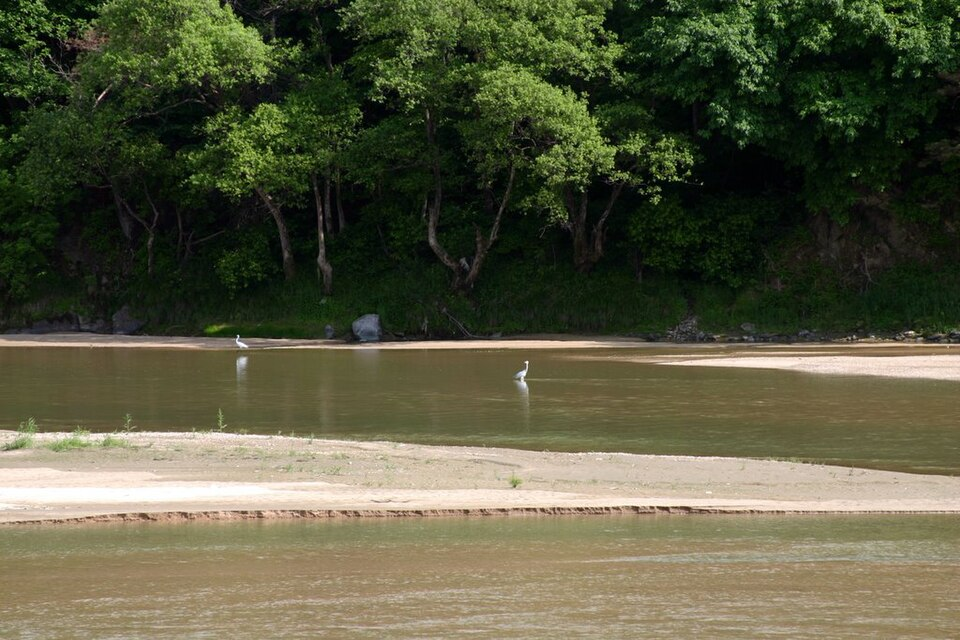

예천 검정고시 — 일하면서 하루 한 시간으로 시작하기

일하면서 검정고시를 준비하려는 분들이 가장 먼저 하는 걱정은 실력이 아닙니다. "시간이 안 나는데 되겠느냐"입니다. 그리고 대부분 "일을 좀 줄이고 나서 시작하자"로 미룹니다. 그런데 그 시점은 잘 오지 않습니다. 예천 검정고시를 일을 계속하면서 준비하려는 분들께 드리는 안내입니다.
하루 한 시간이면 시작이 됩니다
검정고시는 과목마다 60점을 넘기면 그 과목이 합격으로 남는 구조입니다. 만점을 받을 필요도, 등수를 다툴 필요도 없습니다. 그래서 하루에 오래 붙잡는 것보다 매일 같은 시간에 짧게라도 여는 것이 훨씬 효과가 큽니다.
실제로 일하면서 준비하는 분들에게 권하는 시작 분량은 하루 한 시간 안팎입니다. 적어 보이지만, 이 한 시간이 한 달 동안 끊기지 않는 것이 두 시간씩 하다 2주 만에 멈추는 것보다 낫습니다.
시간을 "만들지" 말고 "붙이세요"
없는 시간을 새로 만들려고 하면 며칠 못 갑니다. 대신 이미 고정된 일과 옆에 붙이는 방식이 오래갑니다. 퇴근 후 씻고 나서, 출근 전 아침 식사 뒤처럼 이미 매일 하는 일 바로 뒤에 붙이면 따로 결심하지 않아도 자리가 잡힙니다.
교대 근무나 야근이 있어 시간대가 들쭉날쭉한 경우에는 시각 대신 순서를 고정합니다. "밤 9시"가 아니라 "퇴근 후 첫 번째로"라고 정해 두는 쪽이 근무표가 바뀌어도 버팁니다.
과목은 한꺼번에 말고 나눠서
시간이 부족할수록 여러 과목을 조금씩 건드리는 건 손해입니다. 과목 합격제가 있으니, 끝낼 수 있는 과목부터 확실히 끝내는 편이 낫습니다. 한 과목이 합격으로 남으면 다음 회차에는 그만큼 짐이 줄어듭니다.
순서는 사람마다 다릅니다. 대체로 암기 비중이 큰 과목은 짧은 시간에도 진도가 나가고, 수학처럼 앞 단원이 막히면 뒤가 안 되는 과목은 시간을 좀 더 확보해야 합니다. 그래서 바쁜 시기에는 앞쪽을, 여유가 생기는 시기에 뒤쪽을 배치하는 식으로 짭니다.
빠진 날을 어떻게 다루느냐가 갈림길입니다
일하면서 준비하면 반드시 빠지는 날이 생깁니다. 회식, 야근, 몸살. 문제는 빠진 것 자체가 아니라 그 다음입니다. 빠진 분량을 다음 날 두 배로 메우려다 그날도 못 하고, 그러다 "어차피 밀렸다"로 끝나는 경우가 많습니다.
그래서 처음부터 빠지는 날을 계획에 넣어 둡니다. 일주일에 하루는 비워 두고, 밀린 게 없으면 그냥 쉬는 날로 씁니다. 메울 자리가 미리 있으면 하루 빠져도 계획이 무너지지 않습니다.
예천에서 이렇게 함께합니다
저희는 1:1 맞춤 과외라 근무 형태에 맞춰 요일과 시간을 정합니다. 교대 근무면 근무표에 맞춰 조정하고, 주말에 몰아서 하시는 분도 있습니다. 예천군과 인근 지역은 방문 수업이 가능하고, 이동이 부담되거나 퇴근이 늦으면 화상(줌) 수업으로 집에서 그대로 진행합니다. 오래 쉬었다가 다시 시작하는 분이 많으니, 기초부터 다시 시작하는 것을 부담스러워하지 않으셔도 됩니다.